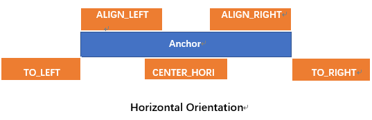
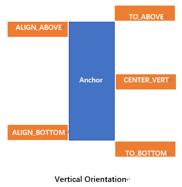

通常情况下，调用showAsDropDown方法后PopupWindow将会在锚点的左下方显示（drop down）。但是，有时想让PopupWindow在锚点的上方显示，或者在锚点的中间位置显示，此时就需要用到showAsDropDown方法的xoff和yoff参数了。这里我们的目的不仅包括上面提到的两种情况（锚点上方或锚点中部），而是囊括了水平和垂直方向各5种显示方式：
下面来看张图：

